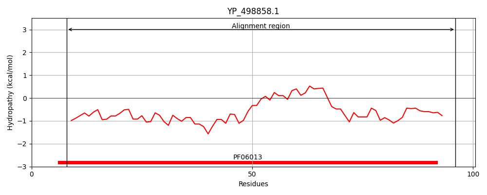
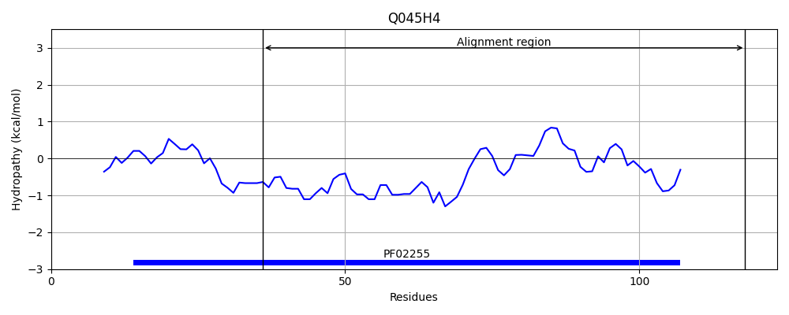
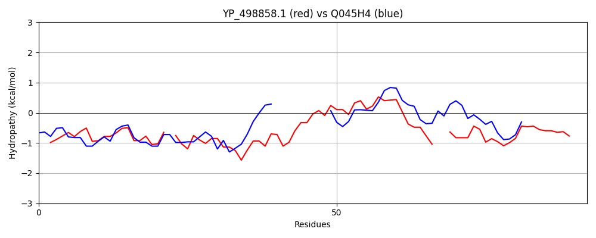

Hit Accession: Q045H4
Hit TCID: 4.A.3.1.3
Hit Description: gnl|BL_ORD_ID|12169 gnl|TC-DB|Q045H4|4.A.3.1.3 Cellobiose-specific PTS system IIA component OS=Lactobacillus gasseri (strain ATCC 33323 / DSM 20243) GN=LGAS_0500 PE=4 SV=1
Mach Len: 92
e:0.000742
Query TMS Count : 0
Hit TMS Count: 0
TMS-Overlap Score: 0.000000
Predicted Substrates:CHEBI:6353;alpha-lactose
BLAST Alignment:
| Protein Hydropathy Plots: | |
|---|---|
|  |  |
Pairwise Alignment-Hydropathy Plot: | |
|  | |